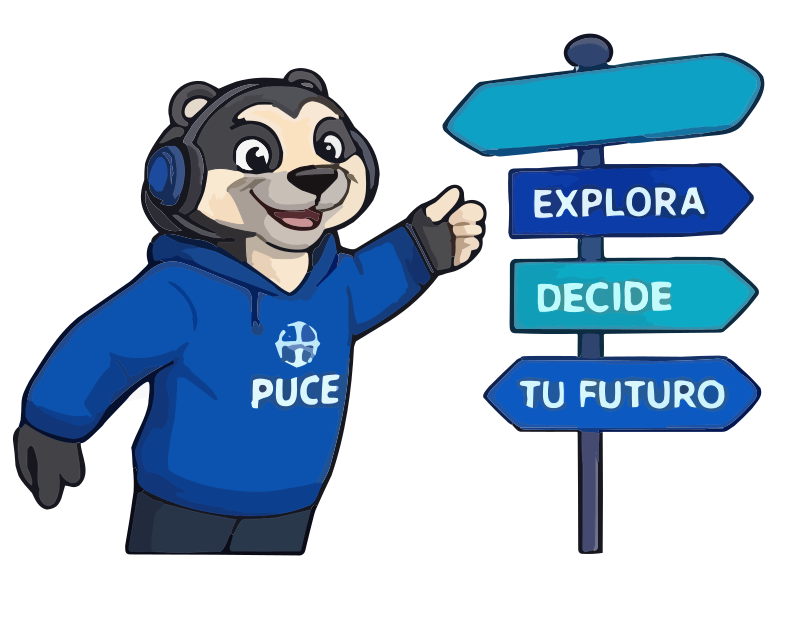

Descubre tu vocación y prueba tu futura carrera antes de decidir
Encuentra tu camino profesional en menos de 10 minutos: responde una evaluación psicométrica ágil, compara tu Top 3 de carreras afines y experimenta un micro-reto práctico con materias reales de primer semestre.

El problema de elegir carrera a ciegas
Bachilleres encuestados manifiestan no tener certeza sobre su vocación o temen equivocarse de carrera al salir del colegio.
De estudiantes universitarios en Ecuador abandonan sus estudios en primer año, generando frustración personal y un alto costo económico familiar.
Los tests vocacionales tradicionales entregan áreas genéricas en papel sin permitir al estudiante experimentar cómo es una clase o materia real.
Cómo funciona ORIENTA
Un embudo vocacional inteligente diseñado para orientar de manera ágil, vivencial y sin presiones:
-
1
Intereses & Dominio
Responde 16 a 24 preguntas psicométricas breves sobre situaciones reales en menos de 5 minutos.
-
2
Podio Top 3
Compara tus 3 carreras más compatibles con porcentaje de afinidad, malla curricular y salidas laborales.
-
3
Micro-reto & IA
Resuelve un caso real de primer semestre y aclara dudas sobre aranceles, becas y materias con Aurelio Bot.
¿Por qué ORIENTA es diferente?
Elegir una carrera no debería ser lanzar una moneda al aire ni aburrirse con cuestionarios interminables.
- ✕ 70 preguntas infinitas y aburridas que no terminas.
- ✕ Entregan solo áreas genéricas ("Te gustan las Ciencias").
- ✕ Mallas curriculares en PDF densos e incomprensibles.
- ✕ Cero práctica: no sabes cómo es una materia de primer año.
- ✕ Sin acompañamiento cuando tienes dudas de costos o becas.
- ✓ Test ágil y balanceado de 16 a 24 preguntas psicométricas.
- ✓ Podio Top 3 de carreras exactas con % de afinidad real.
- ✓ Mallas interactivas nivel por nivel con aranceles referenciales.
- ✓ Micro-retos formativos de 2 min con casos reales de primer semestre.
- ✓ Aurelio Bot con IA guiada para responder dudas al instante.
Resultados de Pruebas con Usuarios
Resultados cuantitativos obtenidos en las jornadas de validación con bachilleres de colegios y aspirantes:
Código QR para la Prueba del Lunes
Escanea este código con la cámara de tu celular para abrir directamente ORIENTA en tu navegador sin instalar aplicaciones ni crear cuentas.
Equipo Developers CARF
Estudiantes de Ingeniería de Sistemas de Información comprometidos con la orientación vocacional comunitaria:
Gestión del backlog, historias de usuario y coordinación académica.
Facilitación ágil, despliegue de infraestructura y configuración backend.
Desarrollo del recorrido central, lógica JavaScript y optimización móvil.
Prototipado, diseño de interfaces, afinidad Top 3 y pruebas de usabilidad.
Descubre tu futuro profesional en 5 minutos
Para hacer el test vocacional, no necesitas crear cuenta ni dejar contraseñas. Es 100% anónimo, gratuito y seguro según la Ley de Protección de Datos Personales.
👉 HAZ CLIC AQUÍ PARA COMENZAR EL TEST VOCACIONAL